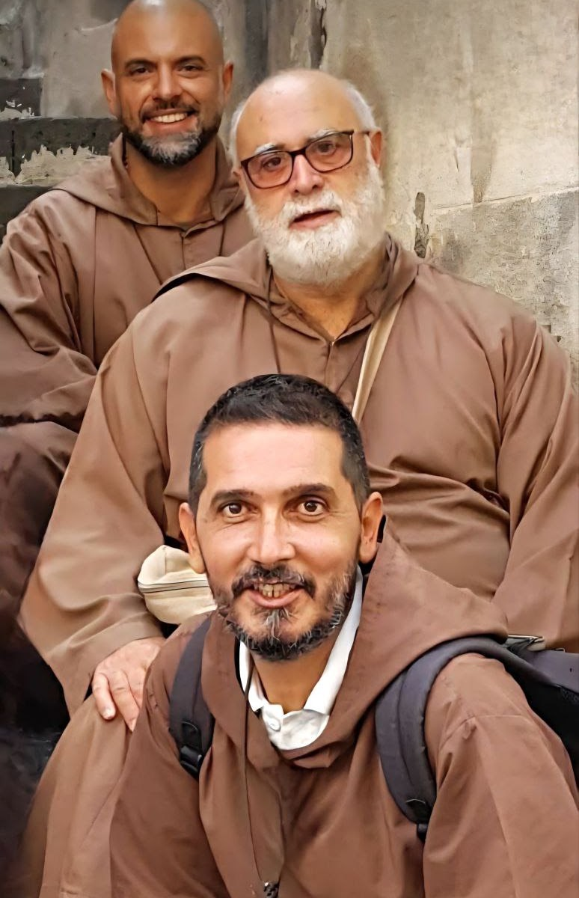

Chi siamo

La Fraternità Santa Maria degli Angeli
è una comunità che accoglie fratelli e sorelle di vita comune, sacerdoti, laici e famiglie: vocazioni diverse, ma un unico desiderio nel cuore, seguire Gesù nello stile semplice del Vangelo.
Uniti da un’unica missione — l’amore a Cristo e alla Chiesa — i membri vivono la loro consacrazione scegliendo Dio solo e lasciandosi guidare anche dall’esempio di Francesco e Chiara d’Assisi.
Ad imitazione delle prime comunità cristiane, la Fraternità conduce la propria vita nella semplicità, nella povertà, nell’umiltà e nella gioia francescana, cercando una fede concreta fatta di preghiera, fraternità, ascolto e servizio.
Vive la gioia di camminare insieme e di annunciare che Dio è Padre e che nessuno è escluso dal Suo amore.
Per questo si mette accanto alle persone, anche nella strada, con attenzione particolare ai poveri e agli ultimi, dedicandosi alla missione e all’avventura evangelica.
È presente in Sicilia, tra Noto, Piazza Armerina e Catania, in luoghi di preghiera e di vita ecclesiale.
Se desideri conoscerci, partecipare o chiedere una preghiera, sei il benvenuto.